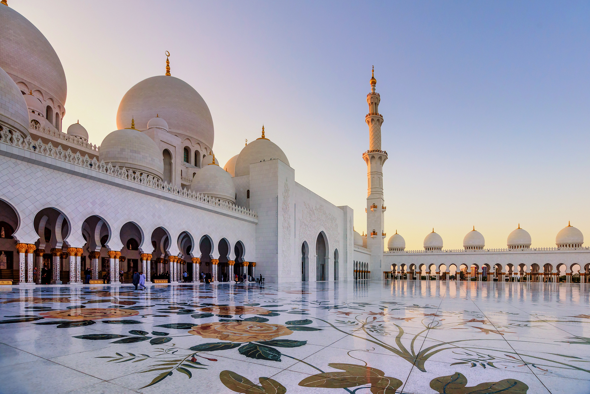

<app-navbar></app-navbar>
<div class="container">
  <div class="row">
    <div class="col-12">
      <a routerLink="/panel"><ion-icon style="color: #2C6632; font-size: 40px; vertical-align: middle ;" name="arrow-back-circle-outline"></ion-icon></a><input type="text" placeholder="Recherchez une mosquée" style="border-radius: 20px; padding-left: 50px; padding-right: 50px;">
      <i></i>
        
      
      <table class="table" style="margin-top: 30px;">
  <thead>
    <tr>
      <th scope="col">#</th>
      <th scope="col">Photo</th>
      <th scope="col">Nom de la mosquée</th>
      <th scope="col">Nom de l'imam</th>
      <th scope="col">N°Don</th>
      <th scope="col">Quartier</th>
      <th scope="col">Action</th>
    </tr>
  </thead>
  <tbody>
    <tr>
      <th scope="row">1</th>
      <td></td>
      <td>Grande mosquée de Bamako</td>
      <td>Koké Kallé</td>
      <td>77 63 44 90</td>
      <td>Bamako-Coura</td>
      <td><ion-icon name="create-outline"  style="color:#2C6632;">
            </ion-icon><ion-icon name="trash-outline" style="color: red;"></ion-icon></td>
    </tr>
    
  </tbody>
</table>
    </div>
 
  </div>
  
</div>